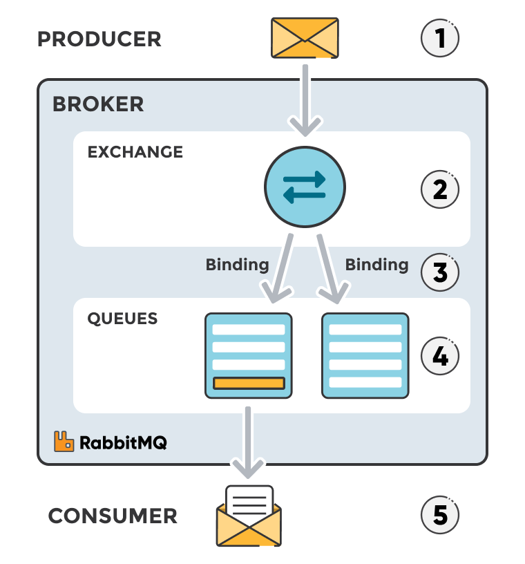

RabbitMQ¶
RabbitMQ is another example of message broker
It works on AMQP
Here you can observe architecture 
So, the main difference from kafka is the presence of
- Exchange: Receives messages from producers and routes them to queues based on the rules set by the exchange type. For a queue to receive messages, it must be bound to at least one exchange.
- Direct Exchange: Routes messages to queues based on an exact match between the message routing key and the queue's binding key.
- Fanout Exchange: Broadcasts messages to all queues bound to the exchange, ignoring the routing key.
- Topic Exchange: Routes messages to queues based on pattern matching between the routing key and the queue's binding key, allowing flexible and wildcard matching.
- Headers Exchange: Routes messages based on matching message header values rather than the routing key.
- Binding: A binding creates a connection between a queue and an exchange.